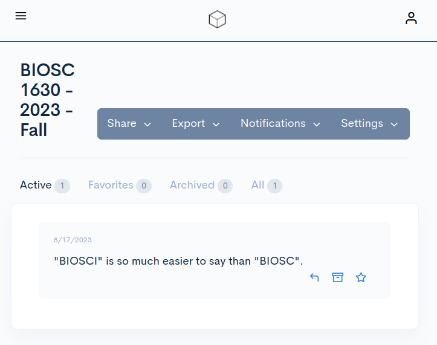

Syllabus for BIOSC 1630
Computational Biology Seminar#
Semester: Fall 2023
Meeting time: Wednesdays 1:00 PM - 3:30 PM
Location: 206 Eberly Hall
Instructor: Alex Maldonado, PhD (he/him)
I prefer to be called by my first name
Email: alex.maldonado@pitt.edu
Drop-in discussions: Thursdays 11:00 AM - 12:00 PM
Description#
Topics in computational biology will be explored using primary literature. Students will present research articles orally, as well as complete a series of writing assignments that will culminate in the production of a literature review paper.
Prerequisites#
You must be a Junior or Senior on the CBUAS-BS and CBUSCI-BS plan.
You must also have completed BIOSC 1540 with a minimum grade of C and one of the following courses:
ENG 0102;
ENGCMP (0002 or 0006 or 0020 or 0200 or 0203 or 0205 or 0207 or 0208 or 0210 or 0212);
ENGFLM 0210;
FP (0003 or 0006).
Writing intensive#
BIOSC 1630 will fulfill the requirement for a writing-intensive course in your major. The Dietrich School of Arts & Sciences Writing Institute defines this as
a course in which students engage with writing substantively throughout the term;
they write and revise throughout the term (not just at the end);
they write a total of 5750–6250 words;
they get feedback from their teacher and their peers.
Note
Five hundred words is approximately one page single-spaced and two pages double-spaced. You are expected to write 11–13 single-spaced pages or 23–25 double-spaced pages in this course.
Philosophy#
Clear and efficient communication is a crucial—and often neglected—aspect of science. Intentional or unintentional miscommunication of research and data can result in adverse consequences; some examples include a flawed Challenger launch decision, inconsistent usage of units with the Mars Climate Orbiter, poor communication between experts and scientists with the public during the COVID-19 pandemic, and rampant misinformation. Lectures, assignments, and activities for this course are designed to teach you the tools to communicate effectively and comprehend scientific literature in computational biology.
What makes good written or visual communication? The answer is highly subjective. I argue that there is no “correct way” to communicate, and it depends on both the material’s producer and consumer. Some things could make papers or presentations incomprehensible, but everything else that turns “acceptable” into “excellent” is a matter of taste.
Furthermore, it’s essential to recognize that computational biology is a rapidly evolving landscape. To keep up-to-date, we must ensure our working knowledge is broad enough to comprehend and incorporate advancements quickly. We’ll look at many different topics in computational biology, exploring its complex details and the changes it leads to.
My principal goals for this course are to equip you with the tools to
Engage in productive and positive learning experiences and growth;
Navigate and understand the various subfields of computational biology;
Organize, draft, revise, and finish preparing writing and presentations;
Recognize what aspects hamper written (e.g., grammar, organization, formatting) and visual (e.g., color, design, pace) communication;
Discover your voice and style of communication;
Process and digest information from a variety of different scientific sources.
Outcomes#
After successfully completing this course, students should be able to do the following.
C1. Efficiently search for and identify relevant scientific literature.
C2. Effectively summarize the motivation, methods, and key findings in scientific literature.
C3. Critically evaluate the robustness and validity of methods and analyses.
C4. Interpret and draw meaningful conclusions from biological data.
C5. Assess the transparency, reproducibility, and adherence to open science practices.
C6. Situate articles within the broader scientific literature, recognizing connections, gaps, and novel insights.
C7. Understand the interplay between computational and experimental corroboration.
C8. Communicate scientific ideas and data effectively through clear, concise, and well-structured writing.
C9. Deliver engaging and informative presentations on scientific literature.
Required materials#
Texts#
You will be required to read literature from various scientific journals. All selected articles are accessible through the Pitt Library System.
Tip
If you create a bookmark with the URL as javascript:void(location.href='http://pitt.idm.oclc.org/login?url=%27+location.href), you can click the bookmark while on the site you want to reload it using the Pitt Library System.
There are no required textbooks for this course. However, a few resources could be helpful, but they are not mandatory.
Scientific Writing: Easy when you know how
A useful resource for structuring all types of scientific writing with supporting examples.The Scientist’s Guide to Writing: How to Write More Easily and Effectively throughout Your Scientific Career
Great advice for writing effectively.The Little, Brown Essential Handbook
Comprehensive resource for writing.Science and Technical Writing: A Manual of Style
Grammar and style recommendations.The Blue Book of Grammar and Punctuation
Authoritative reference on English grammar. (Also has online resources.)Writing science: how to write papers that get cited and proposals that get funded
Broad suggestions for framing scientific writing.The KSJ Science Editing Handbook
MIT’s reference for scientific journalism.
Computers#
Access to a computer during and outside of class is required. If you do not have routine computer access, please get in touch with me about technology resources available through the library.
Attendance#
Your active engagement in this course holds tremendous value, as our class convenes weekly, focusing on dynamic in-class activities. Your active participation and consistent attendance enable an enriching learning environment.
Important
Attending classes virtually will not be an option.
If you cannot attend a class, it remains vital for you to engage with the materials covered during that session. Should you miss a class, you’ll be responsible for covering the content made available through the course materials and completing an additional make-up assignment. This assignment is due before the subsequent class. This practice ensures you maintain a strong connection with the course material and its overarching learning objectives, even when your physical presence is impossible.
My intent is not to punish you but instead to ensure that you derive the maximum benefit from this course while allowing for the inevitable demands that life may present. In this spirit, each student is granted two absences from the course—no explanation needed. These absences will not affect your overall grade. They should aptly accommodate any pre-planned commitments or unexpected situations that may arise throughout the semester. Nevertheless, prioritizing class attendance whenever possible is in your best interest.
Five points will be deducted from your participation grade for any subsequent absences beyond the initial two. Please reach out via email if you find yourself facing exceptional circumstances that might lead to further absences. We can discuss and explore reasonable solutions that align with your academic progress and commitments. Your success in this course is a shared objective, and I’m here to provide support and assistance as needed.
Engagement#
In this course, active participation in class discussions is an integral part of the learning experience. I will use a rubric to assess your in-class participation to help you understand what is expected of you and provide meaningful feedback on your participation. The rubric outlines the criteria for excellent, good, satisfactory, and needs improvement participation in class discussions. These criteria include your contributions to class discussions, your ability to ask thoughtful and relevant questions, and your ability to provide well-reasoned responses to questions from the instructor and peers. Using this rubric, I aim to provide clear expectations for your participation in class discussions and to help you actively engage in the course. We encourage you to use the rubric to self-assess your participation and reflect on improving your engagement in class discussions.
Assessments#
Below are short descriptions of the assessments used during this course.
Warning
Any and all assessments are subject to change with sufficient notice.
Activities#
Most classes, especially in the first half of the semester, will have group activities to enhance our learning process. Full participation is expected from each class by contributing to discussions and activities.
Assignments#
Assignments will be used in this course to provide additional practice for topics and activities covered in class. Since this is a writing course, this is an avenue for you to receive feedback before drafting your paper.
Literature review#
Each student will select a scientific article in computational biology to be the focus of both a presentation and a review paper. The main scientific article should be within the last two years in an approved journal discussed here. More information will be provided during the semester.
Presentation#
Students are expected to prepare, practice, and give a 20-minute presentation that explains and contextualizes their paper to the class.
Paper#
In parallel, you will write a paper centered on the same scientific article as your presentation. Using at least two additional primary literature articles will put it into context. You will be expected to include in your paper (7–9 pages, 1.5 spacing, 12-point font, 1” margins) a significant background about the biological and computational relevance, the current state of knowledge about the topic, a discussion of critical experiments leading to our understanding, and your suggestions for future work.
Distribution#
There are a total of 100 points possible for this class.
Category |
Assessment |
Points |
|---|---|---|
Activities |
Participation |
20 |
Total |
20 |
|
Assignments |
5 |
|
Scientific journalism |
5 |
|
Total |
10 |
|
Presentation |
Presentation |
30 |
Total |
30 |
|
Paper |
5 |
|
Draft |
10 |
|
Peer review |
5 |
|
Final draft |
20 |
|
Total |
40 |
|
Extra credit |
5 |
Late assignments and extensions#
Our class discussions will often revolve around the work you complete. Ensuring the effective use of our class time relies on the timely completion of these assignments.
I am mindful of the diverse nature of deadlines, particularly in the scientific realm. Some are set in stone, while others exhibit more flexibility. It’s noteworthy that in the scientific community, researchers frequently submit manuscripts and reviews days, weeks, or months after the editor’s request. Such practices are widely understood. Conversely, submitting a grant application a minute past the deadline is ineligible for review.
With this in mind, I will use the following late assignment and extension policy. It encourages timely submissions while acknowledging the influence of external commitments and unforeseen circumstances.
All students will start with five extra credit points.
Every assignment comes with an automatic two-day extension window. You can submit your assignment for full credit until Friday at 1:00 PM. No explanation or justification is needed.
However, using this extension (i.e., submitting up to two days after the deadline) will result in a deduction of your extra credit worth 25% of the assignment. For example, if you submit an assignment worth 10 points one day late, your extra credit will be reduced by 2.5 points.
Repeated late assignments would result in losing points off of your total grade.
If an assignment is submitted more than two days late, 25% of the assignment’s value will be deducted after each 24 hours.
Exceptions for the loss of extra credit will be made in a similar procedure as the attendance policy.
Thus, I will not round up any final grades. If you submit every assignment on time, the extra credit is worth 5% of your total grade—equal to a bump to the next highest letter grade.
Scale#
Letter grade |
Percentage |
|
|---|---|---|
A+ |
97 - 100% |
4.00 |
A |
93 - 96% |
4.00 |
A- |
90 - 92% |
3.75 |
B+ |
87 - 89% |
3.25 |
B |
83 - 86% |
3.00 |
B- |
80 - 82% |
2.75 |
C+ |
77 - 79% |
2.25 |
C |
73 - 76% |
2.00 |
C- |
70 - 72% |
1.75 |
D+ |
67 - 69% |
1.25 |
D |
63 - 66% |
1.00 |
D- |
60 - 62% |
0.75 |
F |
0 - 59% |
0.00 |
Schedule#
Week |
Date |
Topic |
Due |
|---|---|---|---|
|
|
||
|
|
||
|
|
||
4 |
September 20 |
Results |
|
5 |
September 27 |
Storytelling |
|
6 |
October 4 |
Critical analysis I |
|
7 |
October 11 |
Critical analysis II |
|
8 |
October 18 |
Student presentations |
Paper first draft |
9 |
October 25 |
Student presentations |
|
10 |
November 1 |
Student presentations |
|
11 |
November 8 |
Student presentations |
Paper second draft |
12 |
November 15 |
Student presentations |
|
13 |
November 22 |
Reproducibility |
|
14 |
November 29 |
Expert panel |
Paper final draft |
15 |
December 6 |
Open |
Generative AI#
We are in an exciting area of generative AI development with the release of tools such as ChatGPT, DALL-E, GitHub Copilot, Bing Chat, Bard, Copy.ai, and many more. This course will permit these tools’ ethical and responsible use except when explicitly noted. Some examples of appropriate uses are
brainstorming,
refining ideas,
drafting outlines,
enhancing grammar and style.
Other ways are undoubtedly possible, but any use should aid—not replace—your learning. The guidelines below should guide your usage of these tools. If you have any questions about AI tool usage, please get in touch with me for clarification and guidance.
AI limitations: While AI programs can be valuable resources, they may produce inaccurate, biased, or incomplete material. Each program has its unique limitations as well. For example, ChatGPT and Bing Chat appear similar on the surface, but they are pretty different. ChatGPT operates in an isolated environment and provides responses based only on its—unreleased—training set. Each query in Bing Chat coalesces responses from real-time internet searches.
Bias and accuracy: Scrutinizing each aspect of these enormous data sets used to train these products is infeasible. AI will inherit biases and inaccuracies from these sources and human influences in fine-tuning. You must be critical and skeptical of anything generated from these models and verify information from trusted sources.
Critical thinking: Understand that AI is a tool, not a replacement for your analysis and critical thinking skills. Use AI to enhance your understanding and productivity, but remember that your development as a writer and scholar depends on your ability to engage independently with the material.
Proper attribution: If you use AI tools to supplement your assignments, treat them like any other reference source. Individuals who provide insightful feedback, comments, or discussions are at least included in the Acknowledgements. Authorship is provided if the contributions are substantial. Credit also needs to be attributed to these AI programs; thus, you must precisely cite the AI-generated material and explain how you used the tool and the prompts employed in your work.
For example, if you used ChatGPT to provide editorial advice, you should add something like the following sentence.
Editorial feedback was included with the assistance of ChatGPT after carefully reviewing each suggestion.
OpenAI. (2023). ChatGPT [GPT-3.5-based language model]. Retrieved August 18, 2023, from https://chat.openai.com.
Academic integrity: Plagiarism extends to content generated by AI. Using AI-generated material without proper attribution is a violation of academic integrity policies. Always give credit to AI-generated content and adhere to citation rules.
Furthermore, text from AI tools should be treated as someone else’s work—because it is. You should never copy and paste text directly and, at the very least, paraphrase in your style.
AI detection: As discussed here, the University Center for Teaching and Learning does not recommend using AI detection tools like turnitin due to high false positive rates. I will not use AI detection tools in any capacity for this course, as I encourage and trust that you will responsibly use these tools when permitted and desired.
Remember that generative AI is helpful when used responsibly. You can ethically benefit from these technological advances by adhering to these guidelines. Embrace this opportunity to expand your skill set and engage thoughtfully with emerging technologies.
Instructor and class feedback#
The University of Pittsburgh will send formal Office of Measurement and Evaluation of Teaching (OMET) evaluations about this course and teaching near the end of the semester. I encourage you to give honest feedback, which helps me and the department know what is going well or should change.
However, I know that feedback often comes and evaporates in the moment. I want to give you the space to provide anonymous feedback in real time, so I have made an online “suggestion box” that can be found here. You do not need to make an account.
I will check and respond to your feedback each week before class. All I receive is your comment and the date it was submitted. While they are anonymous, your comments still need to be professional.
{kind=link}
Your well-being matters#
College/Graduate school can be an exciting and challenging time for students. Maintaining your well-being and seeking appropriate support can help you achieve your goals and lead a fulfilling life. It can be helpful to remember that we all benefit from assistance and guidance sometimes, and many resources are available to support your well-being while at Pitt. You are encouraged to visit Thrive@Pitt to learn more about well-being and the many campus resources available to help you thrive.
If you or anyone you know experiences overwhelming academic stress, persistent difficult feelings and/or challenging life events, you are strongly encouraged to seek support. In addition to reaching out to friends and loved ones, consider connecting with a faculty member you trust for assistance connecting to helpful resources.
The University Counseling Center is also here for you. You can call 412-648-7930 at any time to connect with a clinician. If you or someone you know is feeling suicidal, please call the University Counseling Center at any time at 412-648-7930. You can also contact Resolve Crisis Network at 888-796-8226. If the situation is life-threatening, call Pitt Police at 412-624-2121 or dial 911.
Equity, diversity, and inclusion#
The University of Pittsburgh does not tolerate any form of discrimination, harassment, or retaliation based on disability, race, color, religion, national origin, ancestry, genetic information, marital status, familial status, sex, age, sexual orientation, veteran status or gender identity or other factors as stated in the University’s Title IX policy. The University is committed to taking prompt action to end a hostile environment that interferes with the University’s mission. For more information about policies, procedures, and practices, visit the Civil Rights & Title IX Compliance web page.
I ask that everyone in the class strive to help ensure that other members of this class can learn in a supportive and respectful environment. If there are instances of the aforementioned issues, please contact the Title IX Coordinator, by calling 412-648-7860 or emailing titleixcoordinator@pitt.edu. Reports can also be filed online. You may also choose to report this to a faculty/staff member; they are required to communicate this to the University’s Office of Diversity and Inclusion. If you wish to maintain complete confidentiality, you may also contact the University Counseling Center (412-648-7930).
Academic integrity#
Students in this course will be expected to comply with the University of Pittsburgh’s Policy on Academic Integrity. Any student suspected of violating this obligation during the semester will be required to participate in the procedural process initiated at the instructor level, as outlined in the University Guidelines on Academic Integrity. This may include, but is not limited to, the confiscation of the examination of any individual suspected of violating University Policy. Furthermore, no student may bring unauthorized materials to an exam, including dictionaries and programmable calculators.
To learn more about Academic Integrity, visit the Academic Integrity Guide for an overview. For hands-on practice, complete the Understanding and Avoiding Plagiarism tutorial.
Disability services#
If you have a disability for which you are or may be requesting an accommodation, you are encouraged to contact both your instructor and Disability Resources and Services (DRS), 140 William Pitt Union, (412) 648-7890, drsrecep@pitt.edu, (412) 228-5347 for P3 ASL users, as early as possible in the term.
DRS will verify your disability and determine reasonable accommodations for this course.
Email communication#
Upon admittance, each student is issued a University email address (username@pitt.edu).
The University may use this email address for official communication with students.
Students are expected to read emails sent to this account regularly.
Failure to read and react to University communications promptly does not absolve the student from knowing and complying with the content of the communications.
The University provides an email forwarding service that allows students to read their email via other service providers (e.g., Gmail, AOL, Yahoo).
Students who forward their email from their pitt.edu address to another address do so at their own risk.
If email is lost due to forwarding, it does not absolve the student from responding to official communications sent to their University email address.
Religious observances#
The observance of religious holidays (activities observed by a religious group of which a student is a member) and cultural practices are an important reflection of diversity. As your instructor, I am committed to providing equivalent educational opportunities to students of all belief systems. At the beginning of the semester, you should review the course requirements to identify foreseeable conflicts with assignments, exams, or other required attendance. If possible, please contact me (your course coordinator/s) within the first two weeks of the first class meeting to allow time for us to discuss and make fair and reasonable adjustments to the schedule and/or tasks.
Various 2023 religious holidays and related resources during the Fall semester can be found here.
Sexual misconduct, required reporting, and Title IX#
If you are experiencing sexual assault, sexual harassment, domestic violence, and stalking, please report it to me and I will connect you to University resources to support you.
University faculty and staff members are required to report all instances of sexual misconduct, including harassment and sexual violence to the Office of Civil Rights and Title IX. When a report is made, individuals can expect to be contacted by the Title IX Office with information about support resources and options related to safety, accommodations, process, and policy. I encourage you to use the services and resources that may be most helpful to you.
As your instructor, I am required to report any incidents of sexual misconduct that are directly reported to me. You can also report directly to Office of Civil Rights and Title IX: 412-648-7860 (M-F; 8:30am-5:00pm) or via the Pitt Concern Connection at: Make A Report.
An important exception to the reporting requirement exists for academic work. Disclosures about sexual misconduct that are shared as a relevant part of an academic project, classroom discussion, or course assignment, are not required to be disclosed to the University’s Title IX office.
If you wish to make a confidential report, Pitt encourages you to reach out to these resources:
The University Counseling Center: 412-648-7930 (8:30 A.M. TO 5 P.M. M-F) and 412-648-7856 (AFTER BUSINESS HOURS)
Pittsburgh Action Against Rape (community resource): 1-866-363-7273 (24/7)
If you have an immediate safety concern, please contact the University of Pittsburgh Police, 412-624-2121
Any form of sexual harassment or violence will not be excused or tolerated at the University of Pittsburgh.
For additional information, please visit the full syllabus statement on the Office of Diversity, Equity, and Inclusion webpage.
Statement on classroom recording#
To ensure the free and open discussion of ideas, students may not record classroom lectures, discussions and/or activities without the advance written permission of the instructor, and any such recording properly approved in advance can be used solely for the student’s private use.